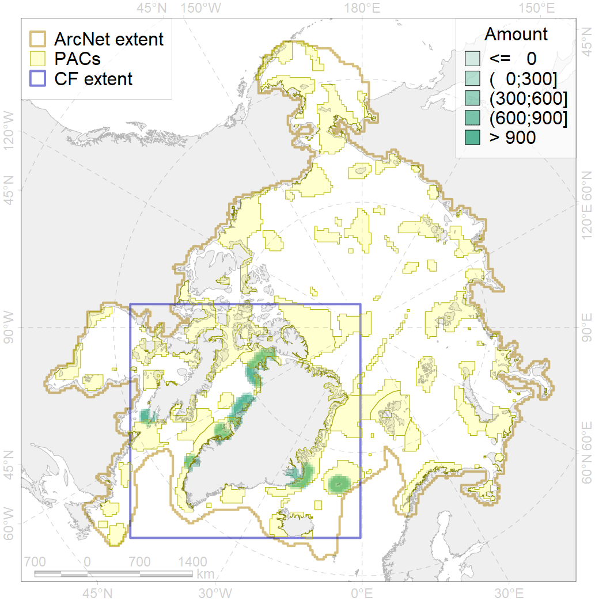
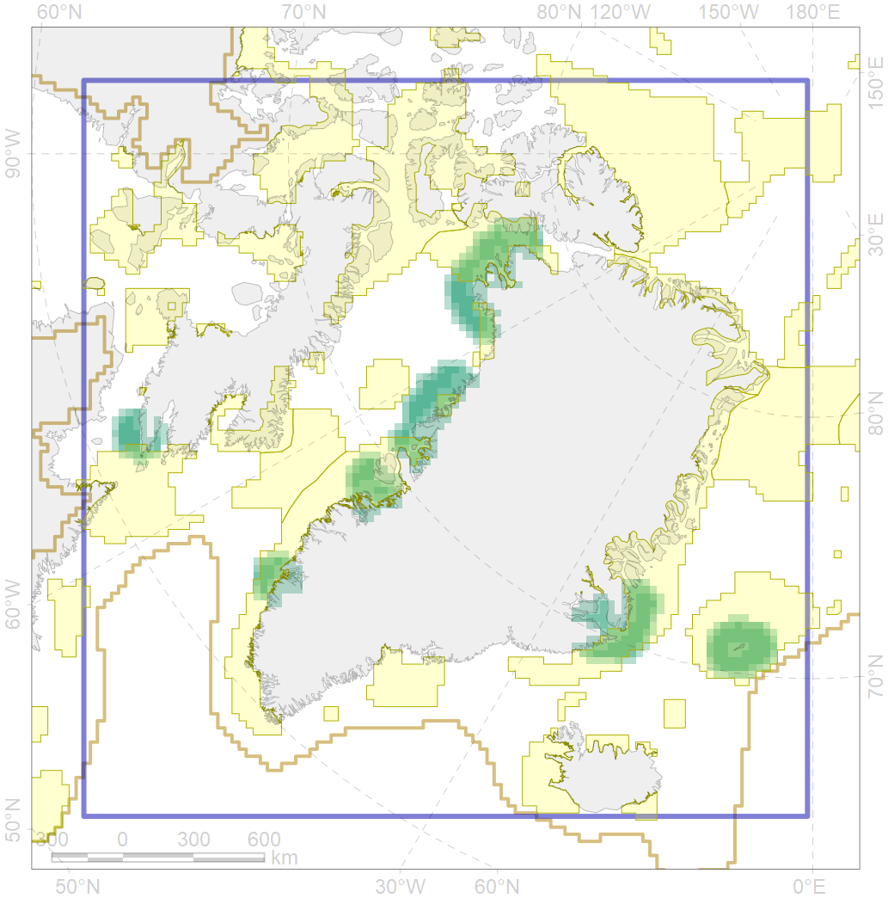

6091

| CF ID | 6091 |
| CF Name | Little auk (Alle alle alle) breeding colonies in Greenland and Canada buffer feeding area |
| Time Period | 1994 |
| Source(s) | Boertmann et al 1996, Finley & Evans 1984 |
| Seasonality | May-August |
| Depth Horizon | <0 m |
| Methodology | Buffer around colonies |
| Author Name | Gavrilo, Tertitski |
| Notes | |
| Conservation Target Set in the Scenario | 0.48 |
| Conservation Target Achieved in the Scenario | 0.674 (Scenario: 140.4%) |
| PAC ID | Proportion in the PAC | Contribution to ArcNet Target Achievement | PAC’s Contribution to the Achieved Target |
|---|---|---|---|
| 32 | 14.2% | 28.9% | 20.6% |
| 34 | 17.5% | 35.9% | 25.6% |
| 44 | 16.3% | 32.8% | 23.4% |
| 48 | 1.3% | 2.0% | 1.4% |
| 49 | 2.4% | 4.7% | 3.3% |
| 51 | 14.2% | 28.3% | 20.2% |
| 76 | 1.6% | 2.8% | 2.0% |
| inner | 67.5% | 135.4% | 96.5% |
| outer | 32.5% | 5.0% | 3.5% |